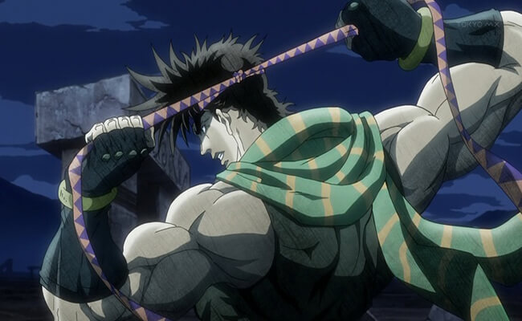
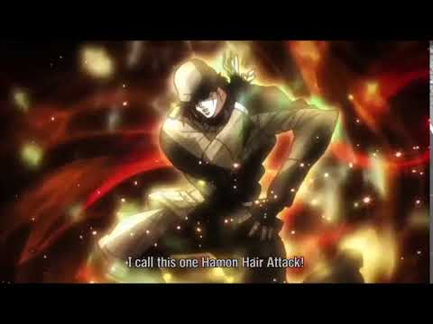
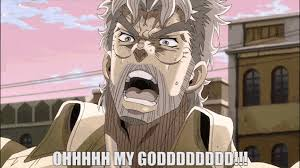

Joseph Joestar

Years after the final confrontation with Dio,Jonathan died but his wife lived and had a grandson named Joseph Joestar.

Joseph Joestar, is a city man who inherited his grandfathers ability to use Hamon. But doesn't know the main aspect of the ability.

But his peacefull life comes to an end when the piller men rise from the stone wall they were sealed inside of long ago.
Soundtracts